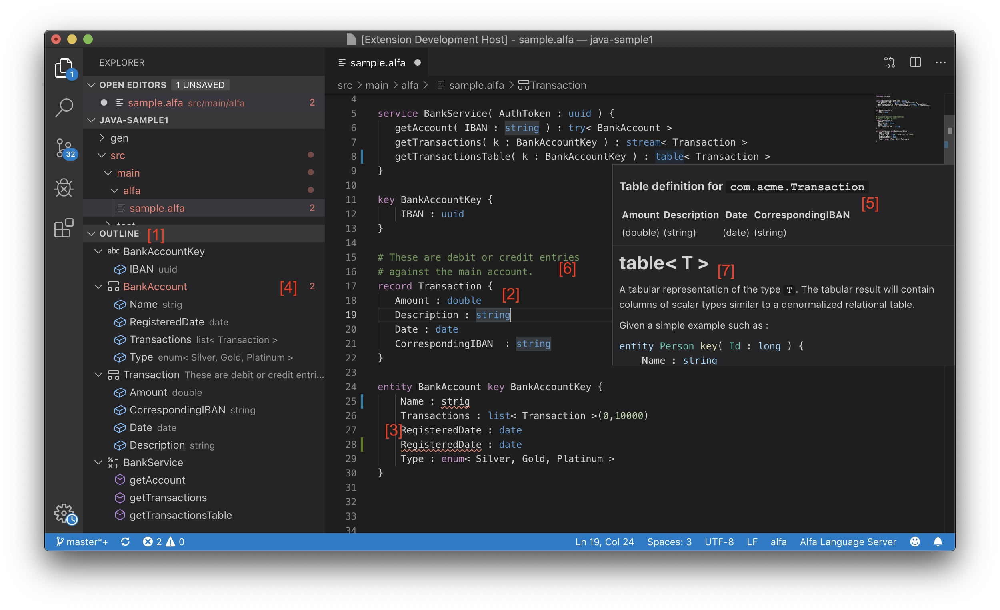

IDE - VSCode Plugin¶
Alfa is designed as a language that is simple to work with. However when dealing with relatively large projects involving 10s to 100s or 1000s of definitions, having features expected in more advanced code editors (IDEs) such as code navigation, syntax highlighting, error highlighting etc become invaluable.
Having comprehensive code editing capabilities has been a key aim for the Alfa toolset and the platform has been engineered with these features in mind from inception. As part of the Alfa Pro package, an IDE based on VSCode will be provided. The Alfa IDE will be a fully-featured editor for Alfa with numerous features summarised below.
As the plugin is at an early stage of development, it is not available to download. However the screenshot and summary below should give a preview of what capabilities can be expected when it is complete.
{kind=link}
- Complete outline of the UDTs defined in the currently opened file along with their fields or methods in the case for
service. - Syntax highlighting on all keywords, datatypes etc. driven directly from the Alfa compiler.
- Errors are underlined ( in the VSCode standard ) sqiggly lines ( ‘strng’ should be ‘string’, RegisteredDate is duplicated ).
- The count of errors identified is identified against the UDT.
- Smart tooltips - not simply static HTML. Here the tooltip is showing the flatten columns for
table< Transaction >type. - Documentation comments will be shown as tooltip. Hovering over ‘Transaction’ will show tooltips with user-supplied documentation.
- The plugin shares documentation as defined in this site ( compare
tabledocumentation in tooltip to table< T > ). i.e. the entire suite of tools, by design, is highly integrated.
The Alfa IDE will not be limited to code editing features. Other features will be added to enable a data modelling toolset around the IDE.